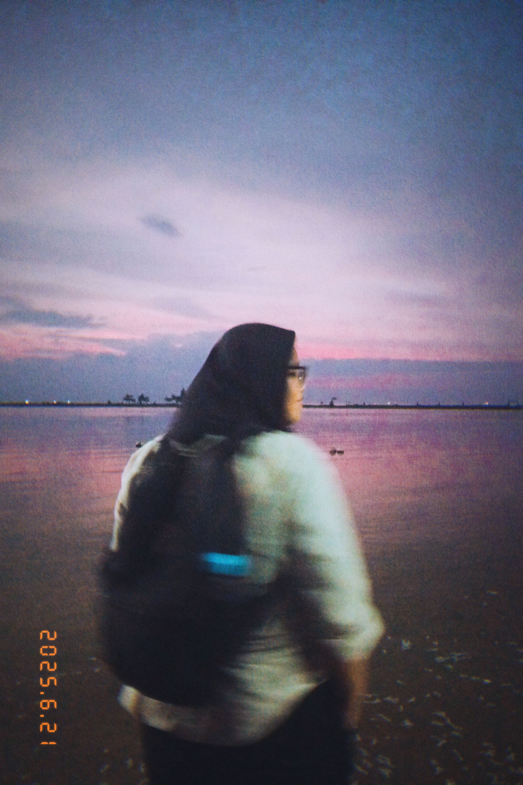
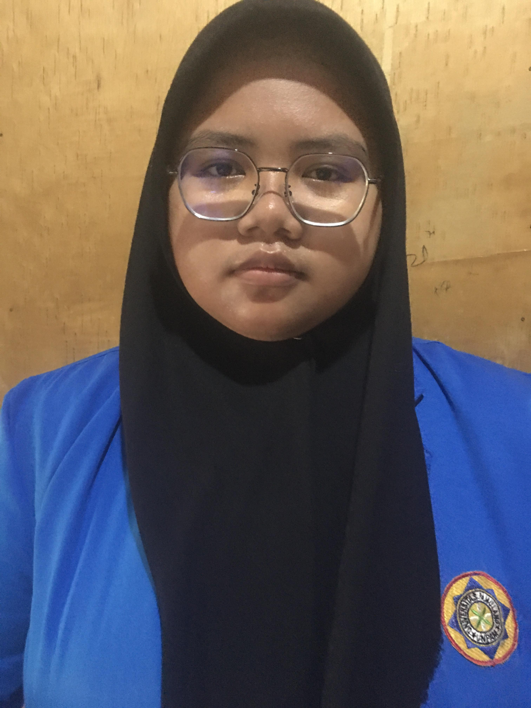
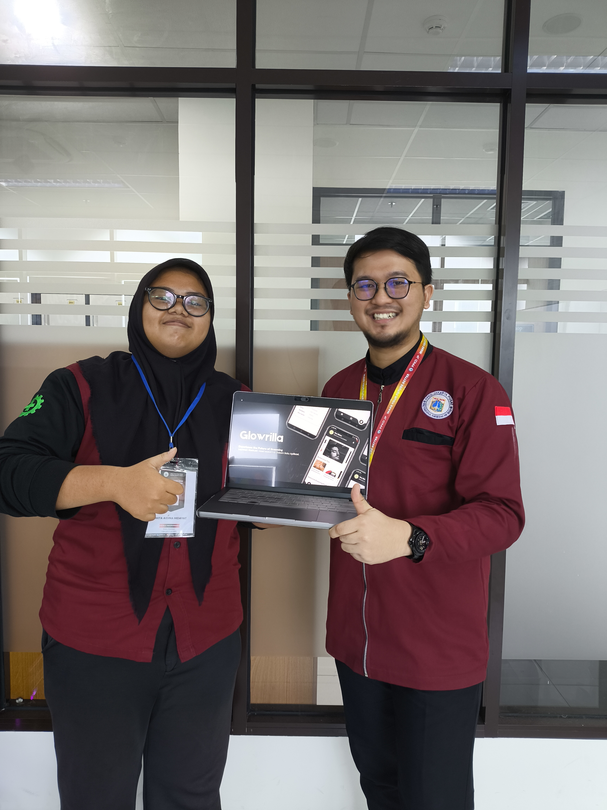

MOBILE APP DEVELOPMENT
Pelatihan Mobile Programming
Mengikuti Pelatihan kerja Mobile Programming dengan instruktur berpengalaman di bidang mobile development selama 45 hari bertempat di PPKD Jakarta Pusat
Web & Mobile App Developer
Mengubah ide kreatif menjadi aplikasi web dan mobile yang intuitif, responsif, serta siap memberikan dampak nyata. Dengan pengalaman dalam pengembangan antarmuka web dan aplikasi mobile, saya berkomitmen untuk menghadirkan solusi digital yang inovatif dan efektif.



Fokus Utama
Web & Mobile App
Hi, I'm Nikita Aidina Hidayat! Mahasiswi Teknik Informatika Universitas Pamulang & Web/App Development Enthusiast. Berfokus pada pengembangan antarmuka web yang fleksibel serta aplikasi mobile berbasis teknologi modern. Siap belajar, berkolaborasi, dan membangun aplikasi yang memberikan dampak nyata.
Eksplorasi proyek dan karya .
Mengikuti Pelatihan kerja Mobile Programming dengan instruktur berpengalaman di bidang mobile development selama 45 hari bertempat di PPKD Jakarta Pusat
Melakukan Sertifikasi Mobile Programming dengan instruktur berpengalaman di bidang mobile development selama 45 hari bertempat di PPKD Jakarta Pusat
Aktif berpartisipasi sebagai peserta dalam program pengembangan bakat dan inovasi teknologi, berfokus pada kolaborasi, riset ide solusi digital, dan peningkatan keterampilan teknis.
Mengikuti seminar lokal kampus BSI SLIPI interkoneksi kampus dan industri bertajuk "Dari Kampus ke Industri Digital: Siapkah Kamu Menjadi Mobile Developer di Era AI?" untuk memahami kesiapan karir, tren industri mobile development, serta integrasi AI dalam ekosistem Flutter.